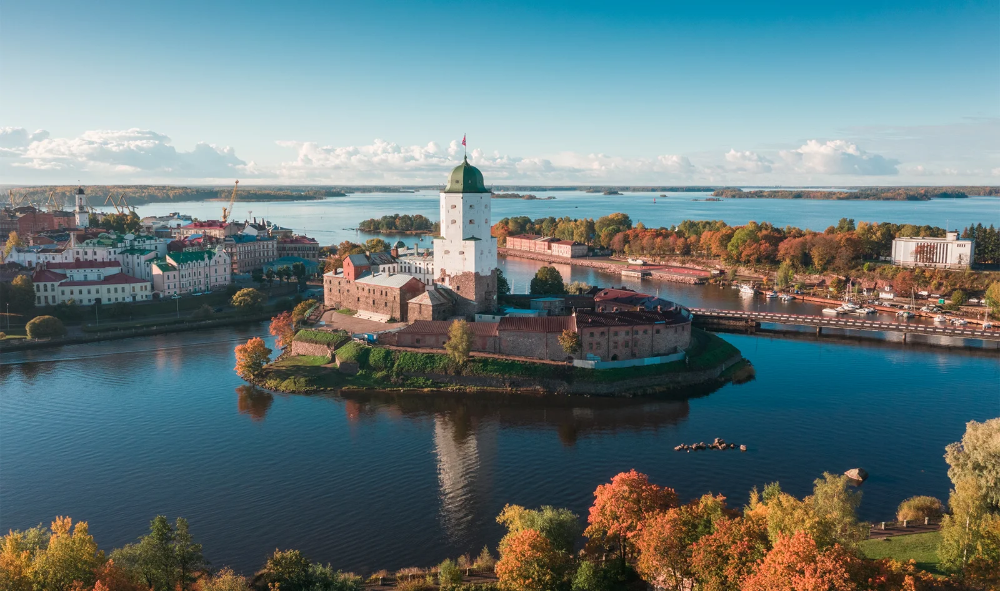
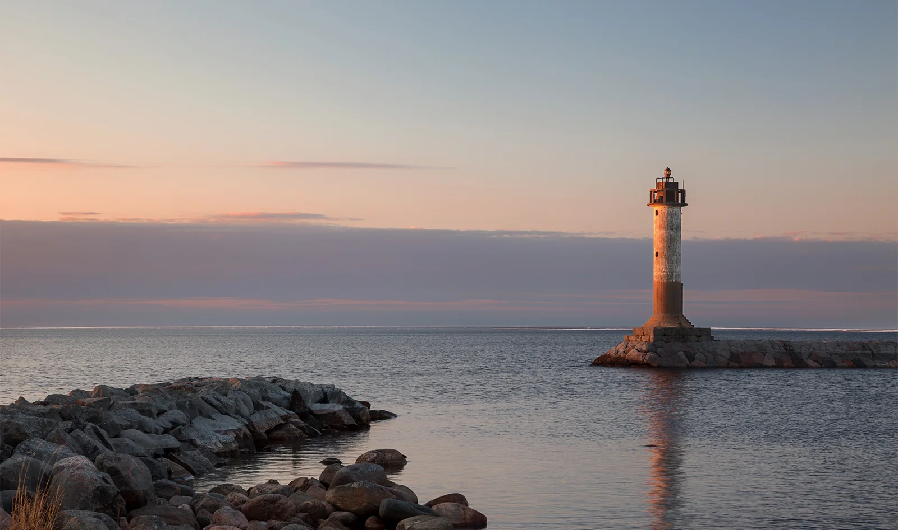
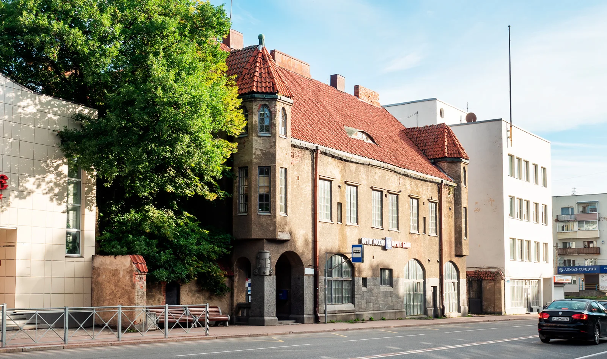
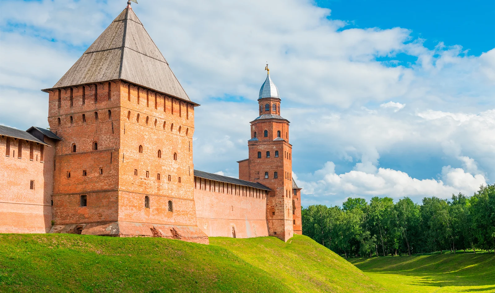

Куда съездить на выходные из Петербурга: 6 идей для коротких поездок
Автор: Диана Акчурина
Несколько направлений для короткой поездки из Петербурга. Идеи для расширения городского путешествия и смены обстановки на один или несколько дней.
Читать полную статью на блоге Островка →



Фото: Michaelvbg / Shutterstock.comИсточник изображения



Фото: Yulia_B / Shutterstock.comИсточник изображения


Фото: Elenglush / Shutterstock.comИсточник изображения


Фото: E. O. / Shutterstock.comИсточник изображения